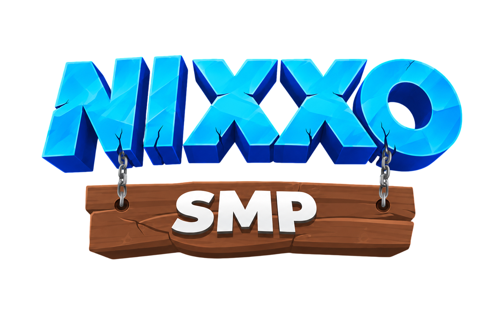
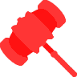

Esta guía define qué puede hacer cada nivel del staff, qué le está prohibido y qué sanción corresponde a cada falta. El servidor se sostiene si el equipo actúa con criterio, pruebas y respeto.

El staff existe para mantener el servidor justo, competitivo y estable. Esto aplica a los tres niveles por igual, sin excepción de rango.
Tratar a los jugadores con cortesía, incluso en situaciones tensas o conflictivas.
Nunca sancionar sin evidencia clara: capturas, vídeos o logs del servidor.
Las decisiones se basan en hechos, jamás en conflictos personales con el jugador.
Los comandos de staff son herramientas de moderación, nunca un atajo dentro del survival.
La información interna del staff no se filtra ni se discute en público.
Ante dudas o casos complejos, se consulta a un rango superior antes de actuar.
Si una situación no está contemplada en este manual pero afecta al servidor, el staff puede intervenir con criterio. Antes de aplicar una sanción no escrita, hay que consultar con un rango superior (Mod/Admin) y dejar constancia escrita de la decisión en el canal interno.
Cada nivel hereda las funciones del anterior y suma responsabilidad, no privilegios de juego.
Ayuda a jugadores y modera el chat.
Investiga reportes y aplica sanciones temporales.
/tp exclusivamente para revisar reportes/tp para encontrar bases o lootControl total, sanciones graves, bugs y economía.
Sanciones acumulativas (Ban directo). Los días se suman según las faltas cometidas.
| Categoría | Falta | Sanción |
|---|---|---|
| Chat / Discord | Spam leve | Advertencia → mute 10m |
| Flood | Mute 15–30m → 1–6h (reincidencia) | |
| Toxicidad excesiva | Mute 30m–6h → 12h–1d | |
| Insultos graves | Mute 1–12h → 1d | |
| Discriminación | Mute 1d → tempban 3–7d | |
| Amenazas reales | Tempban 7–30d → ban permanente | |
| Doxxeo | Ban permanente | |
| Visuales / Únicos | Minimapa | 3 días |
| Freecam | 4 días | |
| ChestESP | 5 días | |
| ESP / X-Ray | 6 días | |
| Timer | 7 días | |
| NoFall | 8 días | |
| Tracers | 8 días | |
| Barionite | 10 días | |
| Movimiento | Fly | 9 días |
| Jesus | 9 días | |
| Speed | 10 días | |
| Phase | 12 días | |
| PvP | Triggerbot / FastBow | 5 días |
| Reach | 5 días | |
| AutoTotem | 5 días | |
| Criticals | 6 días | |
| W-Tap / S-Tap | 6 días | |
| Velocity | 6 días | |
| KillAura / Aimbot / AutoClicker | 7 días | |
| Clientes / Bots | Clientes hack (Meteor, Wurst, etc.) | 6-7 días (4 si confiesa en el juego) |
| Bugs | Bajos (pueden beneficiar) | 7 días |
| Medios (solo beneficio propio) | 10 días | |
| Graves (ventaja ilegal / dupes / economía) | 15 días | |
| Economía / Multicuentas | Farmear kills con amigos | Borrado + tempban 1–7d → 14–30d |
| Multicuenta para AFK/recompensas | Tempbanip 7–30d + borrado | |
| Multicuenta para evadir sanción | Tempbanip o ban permanente | |
| Comprar/vender fuera de tienda | Tempban 30d o ban permanente | |
| Conducta | Molestar excesivamente a nuevos | Advertencia → tempban 1–7d |
| Falsos reportes de mala fe | Advertencia → tempban 1–3d | |
| Bases / Protecciones | Buguear zonas protegidas | Tempban 7–30d |
| Lag / Máquinas | Máquinas para generar lag | Tempban 7–30d |
| Intento de crashear el servidor | Ban permanente |
Reglas que no encajan en una tabla, pero rigen igual para todo el equipo.
Permitida para construir o comerciar. No para AFK, loot, shards o evadir muertes y sanciones.
Promocionar otros servidores se sanciona con mute y tempban. YouTube o Twitch están permitidos si no es spam.
Cualquier sancionado puede abrir un ticket en Discord. Mentir en la apelación agrava la sanción original.
Usar el rango para tp a bases, espiar con vanish o regalar recursos conlleva advertencia, suspensión o expulsión.
Toda sanción grave se registra en el canal privado del staff con nombre, sanción y evidencia adjunta.
Reportar un bug sin explotarlo no tiene sanción y puede premiarse. Abusarlo conlleva tempban.
Pelear, perseguir, aliarse o traicionar es parte del juego. No se sanciona por matar o raidear dentro de las reglas.
Revisar contexto, juntar pruebas, verificar reincidencia, aplicar sanción proporcional y avisar en el canal interno.
Podés jugar y competir, pero nunca usar tu rango para sacar ventaja. Ante la duda, consultá antes de actuar.
Toda conducta queda registrada mediante bots, logs del servidor e interacciones. Cada decisión del staff está respaldada por pruebas. Si creés que una norma fue incumplida o que un miembro del equipo abusó de su poder, hay un solo canal para reportarlo.
Abrir ticket en Discord →
Si has sido sancionado y deseas regresar, los unbans se gestionan exclusivamente a través de la tienda oficial de NIXXOSMP.
Visita el enlace, elige el producto correspondiente y completa el proceso. Una vez realizado el pago, el equipo revisará tu caso y procederá con el desbaneo en el menor tiempo posible.
Cualquier duda abrir un ticket en el Discord en el canal de soporte.
Ir a la tienda →